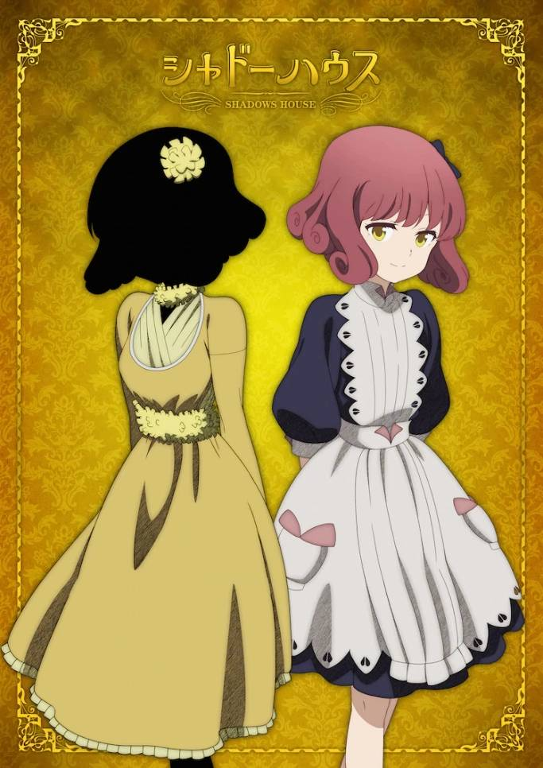
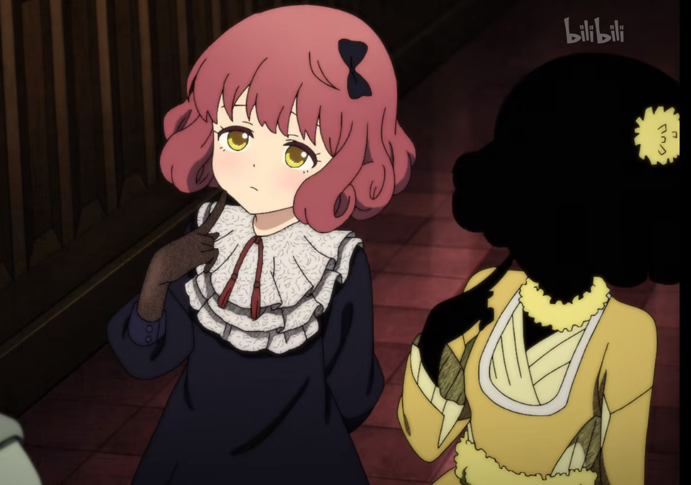
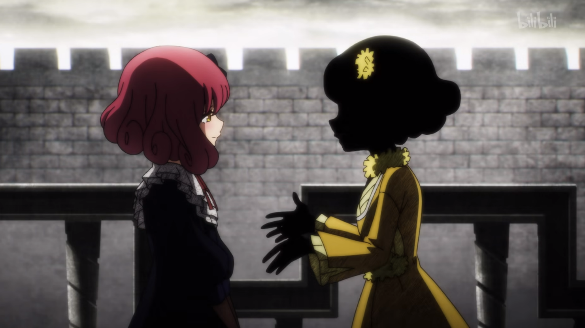
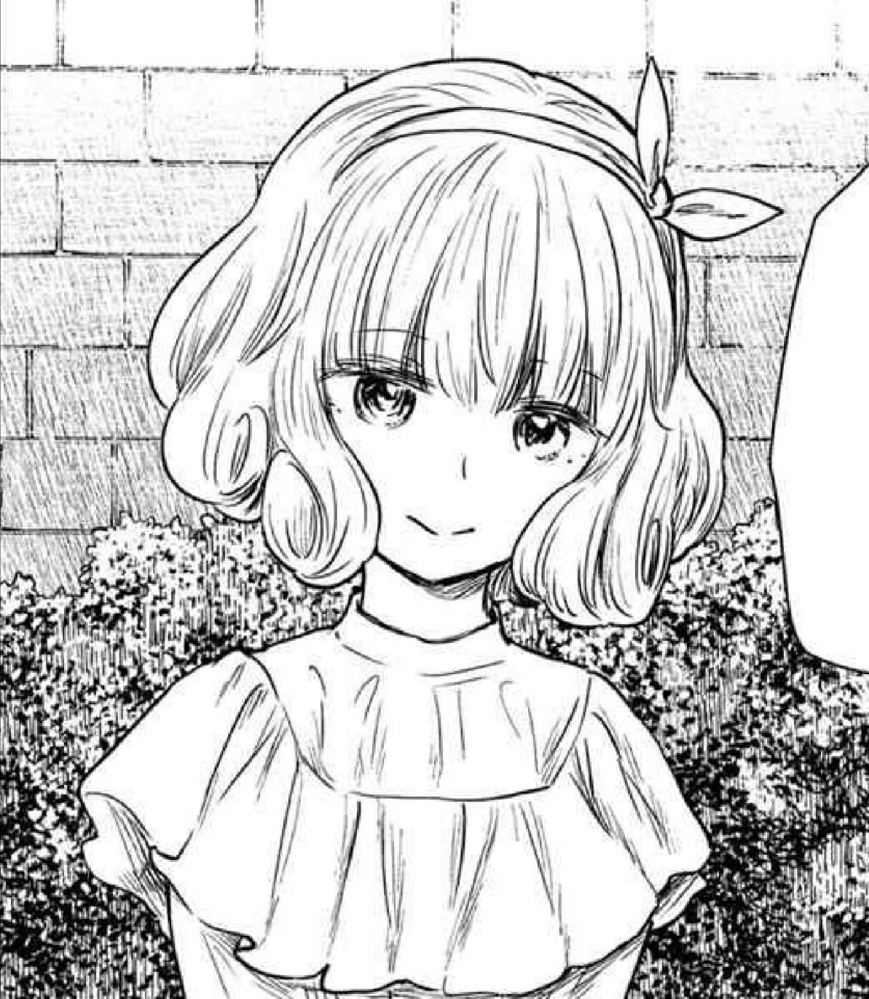
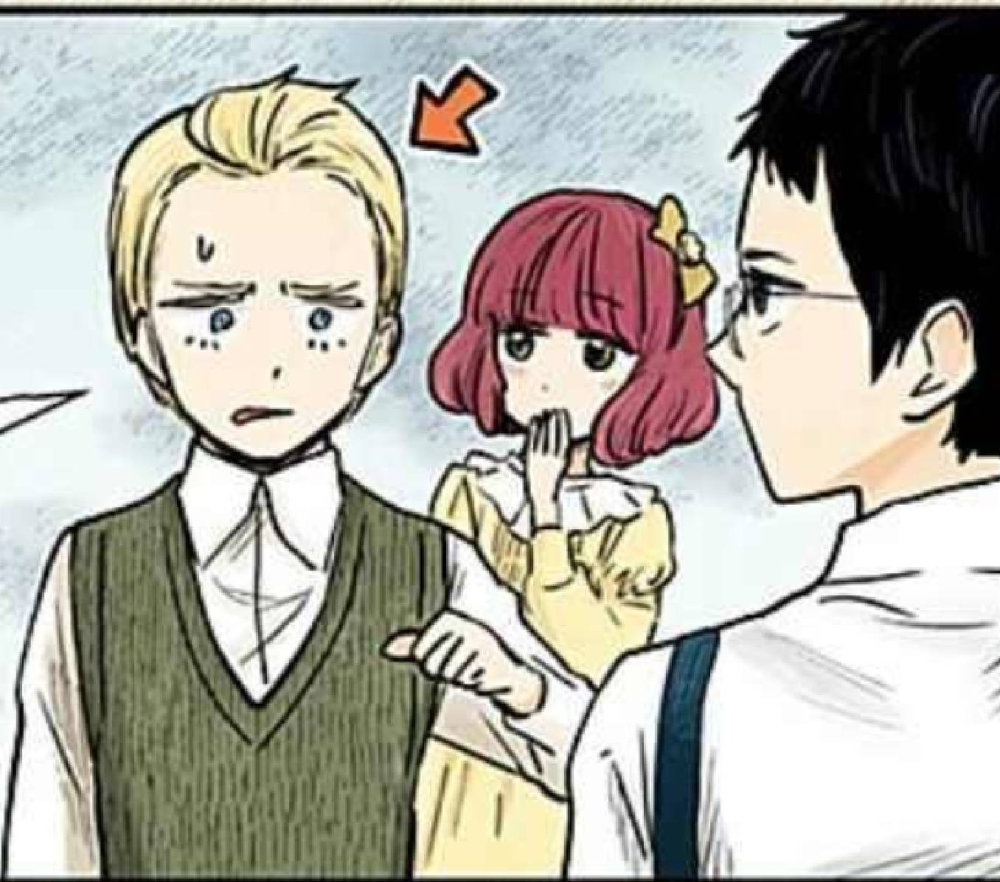

露薏絲與露
點
我
回
主
頁

露薏絲（ルイーズ，聲：佐倉綾音）
影家人，露的主人，穿著黃色連衣裙並戴著非洲菊髮夾。性格開放對人毫無保留，缺點則是極度自戀很少在乎露的想法，凱特分析認為雖然她做事沒有惡意但無法意識到自己正在傷害他人。在斑傑明提點後開始會注重露的意志，自從和斑傑明來往後開始著迷於健身，力氣也變得相當大。社交手腕靈活，在得知影宅真相後常用此能力協助凱特的計畫。
興趣是打扮露的臉龐。黑灰量普通，黑灰能力是使用黑灰來操控活人偶的想法，但是因為能力尚弱，所以僅能控制露一人，在無能力者狩獵事件中曾用能力操控班的表情以讓班傑明更容易親近人。
露（ルウ，聲：佐倉綾音）
活人偶，露薏絲的女僕，有著粉紅色的鮑伯頭。個性沉默少言、善解人意和觀察力強，缺點是幾乎無法做出自己的選擇，因而被視為艾蜜莉可隊上活人偶的榜樣。在正式露面和利奇一起行動後開始對利奇有好感。


人類時期的名字是露薏絲，影宅的領地「鏡邊村」出身，和尚恩、利奇、拉姆是同學，且在當時就對利奇有好感。進入影宅前相當開朗愛笑、積極並喜歡照顧人。
解除洗腦後，逐漸會展露笑容。

